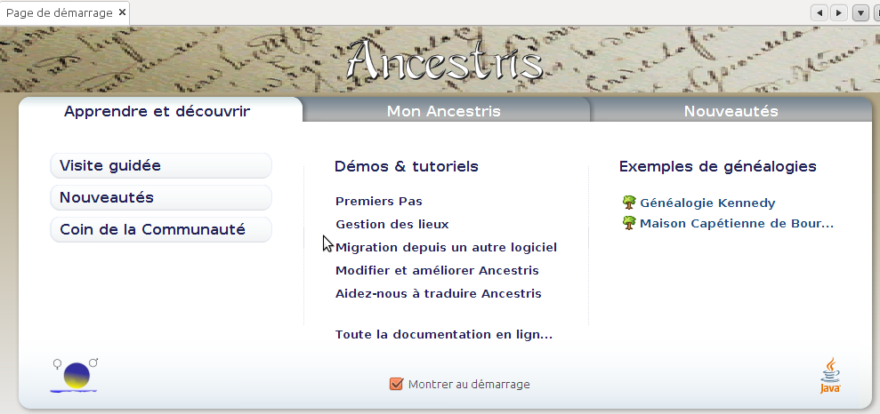

UTILISATION DE BASE
Démarrer avec Ancestris
Quelques conseils pour une bonne prise en main du logiciel.
Un bon moyen pour apprendre à utiliser Ancestris sans abîmer votre généalogie?
utiliser les exemples de Généalogie proposés via l'écran de bienvenue
|

(L'écran de bienvenue: Il permet de commencer à utiliser Ancestris: ouvrir des exemples de généalogie et accéder aux principales pages d'aide du Wiki d'Ancestris.)
Importer une généalogie
Tout ce qu'il est nécessaire de savoir pour réussir l'importation d'une généalogie.
Construire une généalogie
Au lancement d'Ancestris, la page de démarrage - onglet "Mon Ancestris" - vous offre la possibilité d'utiliser un assistant de création qui vous guidera étape par étape.
Pour ceux qui préfèrent une autre méthode:
Sauvegarder son travail
N'oubliez pas de sauvegarder régulièrement votre travail.
|
Une sauvegarde externe est recommandée, personne n'est à l'abri d'un problème matériel !!.
|